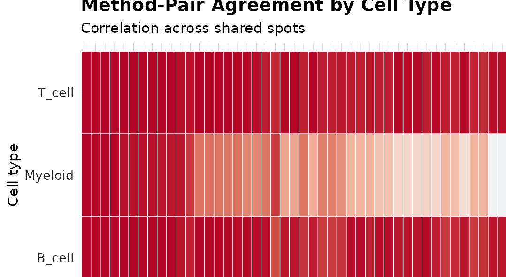
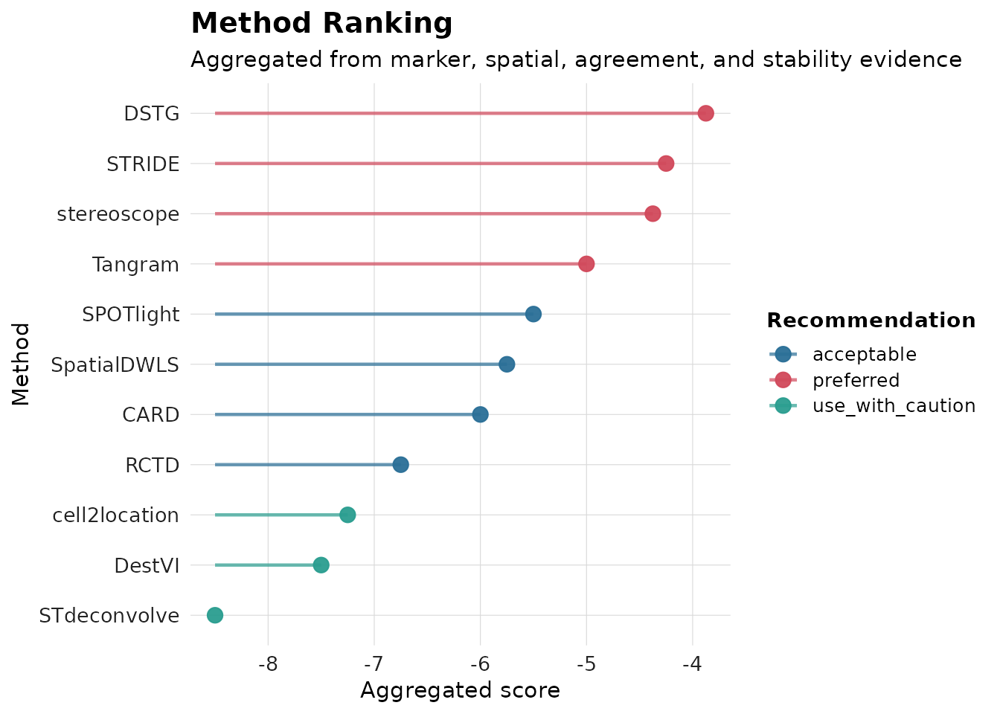
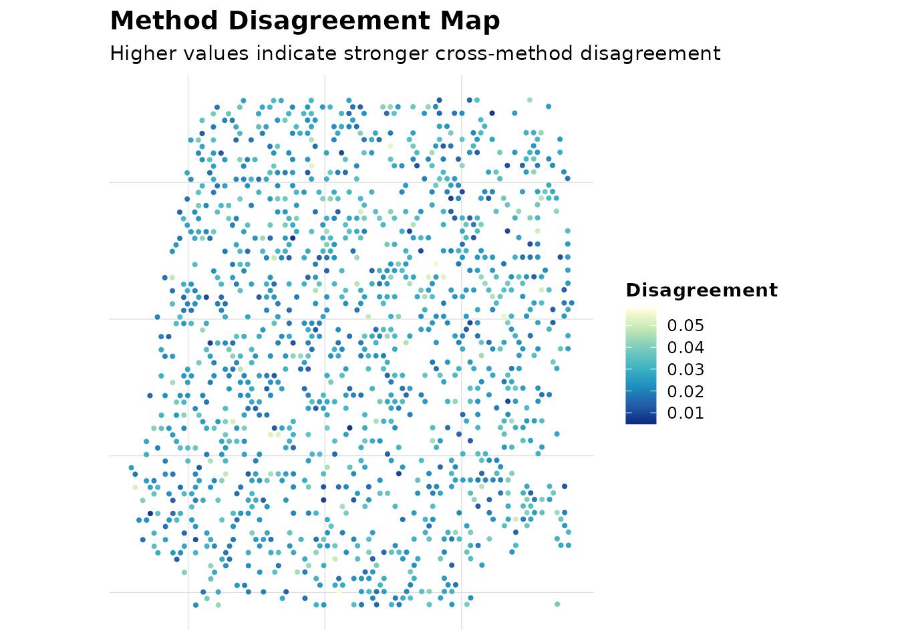
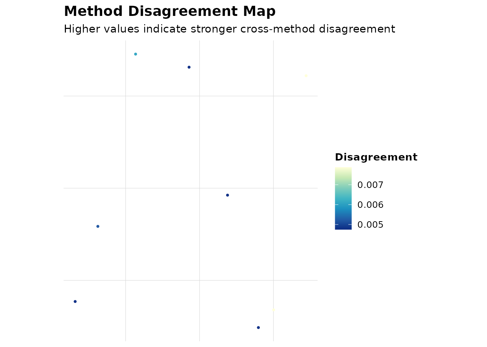

AEGIS One-Step Deconvolution Workflow
Source:vignettes/AEGIS-one-step-deconvolution.Rmd
AEGIS-one-step-deconvolution.RmdStep 1. Inspect supported methods and support mode
Use get_supported_methods() to check whether a method is runnable in R, runnable via Python, or import-only.
registry <- get_supported_methods()
knitr::kable(registry)Step 2. One-step deconvolution dispatch
res <- run_deconvolution(
seu = seu,
reference = reference,
methods = c("SPOTlight", "CARD", "RCTD"),
strict = FALSE
)
all_methods <- get_supported_methods()$method_name
deconv_demo <- simulate_deconv_results(seu, methods = all_methods, cell_types = c("B_cell", "T_cell", "Myeloid"), seed = 909)
obj <- run_aegis(seu, deconv = deconv_demo, markers = markers)如果某些方法当前环境不可运行，建议改为 read_* 适配器导入后继续。
Step 3. Ranking and weighted consensus
obj <- score_methods(obj)
obj <- rank_methods(obj, method = "mean_rank")
obj <- compute_consensus(obj, strategy = "weighted", top_n = min(4, length(all_methods)))Step 4. Visualization (same style as other tutorials)
plot_compare(obj, type = "heatmap")
Heatmap shown with all supported methods (11 / 55 method-pairs). Dense x-axis pair labels are hidden in this static preview to avoid overlap.
plot_compare(obj, type = "consensus_map")
plot_compare(obj, type = "ranking")
plot_compare(obj, type = "disagreement_map")
plot_compare(obj, type = "confidence_map")